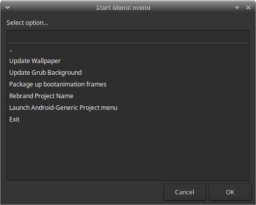

Building Bass: Lineout
This page is the Bass: Lineout build guide (LineageOS 23.2 / Android 16, vendor/ax86-lite, tools/build.sh).
Classic Bass OS (Android 12L) instructions are retained in full under
Licensed private addons and white-label assets are supplied separately to licensed builders. Public docs do not cover bypassing licensing.
Machine requirements
First sync and full image can take many hours depending on network and hardware.
Host dependencies
Install these before repo sync / ./build/unfold_lineage.sh / ./build.sh. Prefer apt packages on Ubuntu; use the optional blocks only when you need that feature.
1. Base build packages (AOSP / Lineage + ISO tools)
Enable i386 multiarch once (needed for some 32-bit linker/ncurses packages on x86_64 hosts):
sudo dpkg --add-architecture i386
sudo apt-get updatesudo apt-get install -y \
git-core git-lfs gnupg flex bison gperf build-essential zip curl \
zlib1g-dev gcc-multilib g++-multilib libc6-dev-i386 \
libncurses5 libncurses5:i386 lib32ncurses-dev \
x11proto-core-dev libx11-dev lib32z1-dev \
ccache libgl1-mesa-dev libxml2-utils xsltproc unzip \
squashfs-tools python3-mako libssl-dev ninja-build lunzip \
syslinux syslinux-utils gettext genisoimage bc xorriso xmlstarlet \
meson glslang-tools libelf-dev aapt zstd rdfind nasm \
rustc bindgen \
swig device-tree-compiler mtools libgmp-dev libmpc-dev \
cpio rsync dosfstools kmod gdisk lz4 cmake libglib2.0-dev \
wget python-is-python3 openssl openjdk-17-jdkNotes:
- Package names drift slightly between 22.04 and 24.04 (
lib32ncurses5-devvslib32ncurses-dev). Ifaptrejects a name, install the closestncurses/lib32zpackage your release offers. rustc/bindgenare used by parts of the Android / Mesa stack. Prefer distro packages; a separaterustuptoolchain is not required for a normal Lineout image.openjdk-17-jdkcovers host Java needs (signing helpers, some app tooling). Newer JDKs may work; 17 is the safe default.
2. Lineout host packages (ax86_setup.sh)
vendor/ax86-lite/build/ax86_setup.sh hard-checks these (kernel .deb packaging and related host work):
sudo apt-get install -y \
debhelper dpkg-dev bc bison flex libssl-dev rsync cpio unzip libdw-dev(build-essential and wget from section 1 cover the rest of the vendor README list.)
3. Meson / Python helpers (Mesa and other Meson components)
sudo apt-get install -y python3-pip pkg-config python3-dev ninja-build meson python3-mako
sudo pip3 install --user jinja2 ply pyyaml pyelftoolsIf your distro already ships usable python3-jinja2 / python3-yaml / python3-ply / python3-pyelftools, prefer apt over pip3.
4. Aaropa installer (Podman) - needed for --aaropa-local
Lineout ISOs use the Aaropa installer. Building install.sfs on the host uses rootless Podman (preferred) via bootable/aaropa/build/aaropa-prebuilt.sh.
sudo apt-get install -y \
podman uidmap slirp4netns fuse-overlayfs passt \
squashfs-tools p7zip-full curl git rsyncpasst provides pasta (Podman 5.x default networking). Older hosts may use slirp4netns instead; install both if unsure.
Configure rootless Podman (one-time):
# Confirm unprivileged user namespaces are allowed (should be 1)
cat /proc/sys/kernel/unprivileged_userns_clone
# Ensure /etc/subuid and /etc/subgid have an entry for your user, e.g.:
# youruser:100000:65536
grep "^$USER:" /etc/subuid /etc/subgidIf entries are missing, add them as root (adjust IDs if your site policy differs), then log out and back in:
sudo usermod --add-subuids 100000-165535 --add-subgids 100000-165535 "$USER"Verify Aaropa deps (prints an apt install line if anything is missing):
# From the AOSP workspace root after sync
bash bootable/aaropa/build/aaropa-prebuilt.sh --check-depsAlternatives:
--aaropa-fetchonbuild.shdownloads release artifacts instead of a local Podman build (still needscurl/wget,p7zip-full, etc.).- Docker can work for some Aaropa steps, but local export currently expects Podman
unshare. Prefer Podman for Lineout.
5. repo and Git LFS
mkdir -p ~/bin
curl -fsSL https://storage.googleapis.com/git-repo-downloads/repo -o ~/bin/repo
chmod a+x ~/bin/repo
echo 'export PATH="$HOME/bin:$PATH"' >> ~/.bashrc
source ~/.bashrc
git lfs installunfold_lineage.sh runs repo init ... --git-lfs.
6. Optional: GameNative (--gamenative)
Default path downloads a CI-signed APK with the GitHub CLI (no local Vulkan compile):
sudo apt-get install -y gh
gh auth loginThen vendor/ax86-lite/build/gamenative_build.sh (or enable --gamenative so setup stages it).
Local from-source GameNative (dev only: Podman/Docker container builds + Gradle) additionally needs:
# Same Podman stack as Aaropa (section 4), plus:
sudo apt-get install -y \
openjdk-17-jdk \
meson ninja-build python3-mako \
llvm-19-dev libclang-19-dev libclc-19-dev \
spirv-tools glslang-toolsax86_setup.sh only warns if those guest-graphics packages are missing; a plain ROM build without local GameNative Vulkan compile does not need them. Pin GUEST_GFX_LLVM_VERSION if your distro uses a different LLVM major than 19.
Never ship images built with --gamenative-dev-key / debug-signed GameNative. Details: GameNativeX64.
7. Optional host utilities
Dependency check summary
Fetch sources and unfold
Layout expected by the vendor scripts:
<parent>/
vendor_ax86-lite/ # this git clone (branch ax86-lite-los-23.2)
aosp-workspace/ # created/filled by unfoldgit clone -b ax86-lite-los-23.2 <vendor_ax86-lite-url>
cd vendor_ax86-lite
./build/unfold_lineage.sh --profile bass-lineage-23.2-core
# or: --profile bass-lineage-23.2-proUnfold will repo init / repo sync LineageOS 23.2 and symlink this tree to aosp-workspace/vendor/ax86-lite.
If the workspace is already synced and you only need to relink:
AX86_SKIP_SYNC=1 ./build/unfold_lineage.sh --profile bass-lineage-23.2-corePrivate / licensed addon trees: place or clone them as instructed by your Bass contact (see also Addon Development: Bass Lineout), then continue.
Environment setup and build
cd ../aosp-workspace
source build/envsetup.sh
lunch lineage_x86_64_tablet-bp4a-userdebugSourcing envsetup.sh runs vendor integration (patches, addon integrate, device package staging).
Preferred wrapper (symlinked as ./build.sh at the workspace root):
# Core profile
./build.sh --profile=bass-lineage-23.2-core --clean
# Pro profile example
./build.sh --profile=bass-lineage-23.2-pro --clean --update-foss-userapps
# Local Aaropa installer + common addons (example)
./build.sh --profile=bass-lineage-23.2-pro --clean \
--aaropa-local --ethernetconfig --extrasRun ./build.sh -h for the full flag list. Profiles set default lunch/make targets and addon flags; individual --flag args still override.
Successful images land under the product out tree (and packaged ISO paths used by your profile). Typical lunch target: lineage_x86_64_tablet-bp4a-userdebug, make goal iso_img.
Profiles (short)
Details: vendor/ax86-lite/README.md and addons/README.md.
Lineout / ax86-lite build flags
Current Lineout tablet builds use vendor/ax86-lite/tools/build.sh. The tables below cover flags documented with product features. Always prefer ./build.sh -h on your tree for the authoritative list.
Fleet and BootSight
Do not combine --bootsight with --fleet-mgmt=mdm. Product overview: Fleet Management, BootSight.
Logger, Button Manager, and Power
--logging-enabled implies --logger. --extras also includes Ax86 Power. Details: Ax86 Logger, Button Manager, Ax86 Power.
Branding
Default without those flags is the Lineage boot animation and wallpaper.
Boot options and lockdown
Details: Bass boot options, Lockdown install block.
Aaropa installer prebuilts
Requires section --aaropa-local.
Other common Lineout flags
Example:
./build.sh --target=lineage_x86_64_tablet-bp4a-userdebug \
--aaropa-local --bootsight --bsbanner --btnmgr --ax86-power \
--logging-enabled --ethernetconfigRelated reading
Legacy Bass OS (classic, Android 12L)
The rest of this page is the older Bass OS Android 12L flow (unfold_bliss.sh / build_bass.sh). It is not the Lineout path. For Lineout, use the sections above (vendor/ax86-lite / ./build.sh).
Please refer to https://bliss-bass.blisscolabs.dev for release notes, hardware requirements and demos of the various options.
Licensing
Much of Bass OS is published under the General Public License 3.0. All generic patches are regularly submitted to Bliss OS where they can be obtained under the Apache License.
Bass OS does have a number of options, features, applications, etc. that can be accessed through purchasing licensing for the private addons, features and tools. See our licensing page for full details.
Warning!
Bass OS is an open-source initiative maintained by Bliss Co-Labs. It is provided "as is" without any warranties or guarantees.
Building from sources
Before building, ensure your system has at least 16 CPU cores, 32GB of RAM, a swap file is at least 16GB, and 500GB-700GB of free disk space available.
Install system packages
(Ubuntu 22.04 LTS is only supported for classic Bass. Building on other distributions can be done using docker.)
sudo apt-get install git-core gnupg flex bison gperf build-essential zip curl zlib1g-dev gcc-multilib g++-multilib libc6-dev-i386 lib32ncurses5-dev x11proto-core-dev libx11-dev lib32z-dev ccache libgl1-mesa-dev libxml2-utils xsltproc unzip squashfs-tools python3-mako libssl-dev ninja-build lunzip syslinux syslinux-utils gettext genisoimage gettext bc xorriso xmlstarlet meson glslang-tools git-lfs libncurses5 libncurses5:i386 libelf-dev aapt zstd rdfind nasm rustc bindgen- Install additional packages
sudo apt-get install -y swig device-tree-compiler mtools libgmp-dev libmpc-dev cpio rsync dosfstools kmod gdisk lz4 cmake libglib2.0-dev- Install additional packages (for building mesa3d, libcamera, and other meson-based components)
sudo apt-get install -y python3-pip pkg-config python3-dev ninja-build
sudo pip3 install mako jinja2 ply pyyaml pyelftools- Install the
repotool
sudo apt-get install -y python-is-python3 wget
wget -P ~/bin http://commondatastorage.googleapis.com/git-repo-downloads/repo
chmod a+x ~/bin/repoYou can also reuse the broader Lineout host package lists at the top of this page where package names still match your Ubuntu release.
Fetching the sources and building the project
git clone --recurse-submodules https://github.com/Bliss-Bass/bass-os.git bass-os-12.1
cd bass-os-12.1Setting up Bass OS Source
!!NOTICE FOR LICENSED ADDONS/FEATURES!!
If you hold an active license for any of the private addons and features for Bass OS, you will need to add the files that you were sent or given access to, into the private/addons or private/manifests folder. If your project requires any vendor patches, those are placed in the patches-vendor/ folder. Once all items are placed properly, you can continue onto the unfolding steps. Please also check your organization's Bass-OS project folder to make sure it didn't come with those additions already added.
Unfolding the source
Bass source uses an unfolding sequence to grab the latest stable point in development for the source, then applies any required changes on top, along with any customizations, licensed addons, modules, etc.
To start the unfolding process, we use the unfold_bliss.sh script:
bash unfold_bliss.shThis will sync the source, and patch it with the latest available updates for Bass OS. Once complete and all patches, and addons are applied successfully, you can move onto the next step.
Building Bass OS
Build Options
Target Specific build scripts
(!!NOTICE FOR LICENSED CUSTOMERS!!) If you have been supplied with the source, then chances are your source comes with a separate build script specific to your device's needs. Please check the project folder for a script with your product name or invoice number in it. Examples: build_ABC01.0.1.sh or build_Intel-AC013.sh. These will include the specific set of arguments passed to the build_bass script, so all you will need to do is run your targeted script to build.
bash build_ABC01.0.1.shGeneral Build Script Usage
We offer a number of options to configure your builds with. You can use the -h argument to see the latest integrations available.
We also symlink the build-x86 command with build_bass.sh and build-x86.sh, so the commands both act the same when building Bass OS.
Example:
bash build_bass.sh -h
Usage: build-x86.sh [options]
Options:
-h, --help Display this help dialog
-c, --clean Clean the project
-d, --dirty Run in dirty mode
-t, --title (title) Set the release title
-b, --blissbuildvariant (variant) Set the Bliss build variant
-i, --isgo Enable isgo version
-v, --specialvariant (variant) Set the special variant
--grubcmdline "option1=1 option2=1" Set the grub cmdline options
--production Disable Test Build watermark and sign builds (requires release/product signature keys)
Launcher Options:
--clearhotseat Enable clear hotseat favorites for Launcher3 Quickstep
--disablesearch Disable device search
-s, --smartdock Enable smartdock
--smartdockb Enable smartdock with Bliss customizations
-k, --kiosk Enable kiosk launcher **requires private git access**
--restrictedlauncher Enable restricted launcher
--restrictedlauncherpro Enable restricted launcher pro **requires private git access**
--garliclauncher Enable garlic launcher
--gamemodelauncher Enable game mode launcher
--crosslauncher Enable cross launcher
--tvlauncher Enable tv launcher
--titaniuslauncher Enable titanius launcher
--desktoponsecondary Enable desktop on secondary displays
Navigation Options:
-t, --tabletnav Enable tablet navigation
--taskbarnav Enable taskbar navigation
--gesturenav Enable gesture navigation
--externalnav Enable navigation on external displays
--rightmouseasback Enable right mouse button as back
Package Options:
--noksu Disable KernelSU
-f, --fossapps Enable fossapps
--minfossapps Enable minimal fossapps
-e, --supervanilla Enable supervanilla
-m, --minimal Enable minimal packages
-r, --removeusertools Enable removeusertools
--viabrowser Enable viabrowser
-w, --wiz Enable Bliss setupwizard
--ethernetmanager Enable EthernetManager
--powermanager Enable power manager
--buildextra Build extra packages
--updatefossapps Update fossapps
--usepos Enable TabShop pos terminal app
Input Options:
--showkeyboard Enable show keyboard
--perdisplayfocus Enable per display focus
--gboard Enable Google GBoard IME
--gboardlite Enable Google GBoard Lite IME
--perdisplayfocusime Enable per display focus with experiment IME
--perdisplayfocuszqyime Enable per display focus with ZQY IME
Firmware & Driver Options:
--sof Include SOF firmware
--silead Include Silead firmware
Other Options:
-a, --atom Include Intel Atom specific configurations
-l, --lockdown Enable secure lockdown build
--adblockdown Enable lockdown ADB defaults
-m, --manifest Generate manifest
--alwaysonsettings Enable always on settings
--nolarge Disable large screen settingsFeatures
- Supports various navigation and UI switches
- Supports various use-case launcher options (requires recent changes to vendor/agp-apps)
- Automatically updates Grub menus and other build configs for launcher and mode options (requires recent changes to vendor/agp-apps)
Please note that some of the build options may require licensed access to the feature/addon/application in order to use it. In some cases, the build will continue with just a warning when these options are used. In other cases, the build will exit. To remedy this, use a different option or remove the offending option from the build command.
Examples
Here are a few examples to help in understanding:
Bass Desktop: Desktop mode demo of Bass featuring SmartDock
bash build_bass.sh --clean --title "Bass" --blissbuildvariant vanilla --specialvariant "-Desktop" --ethernetmanager --tabletnav --smartdock --wiz --clearhotseat --perdisplayfocus --externalnav --externalstatusbar --nolarge --sof --silead --alwaysonsettings --minfossappsBass Restricted: Restricted mode demo of Bass featuring Bliss Restricted Launcher
bash build_bass.sh --clean --title "Bass" --blissbuildvariant foss --specialvariant "-Restricted" --restrictedlauncher --ethernetmanager --fossapps --gesturenav --clearhotseat --externalnav --noksu --showkeyboard --nolarge --alwaysonsettings --sof --sileadBass POS: Point-Of-Sale version of Bass featuring TabShop
bash build_bass.sh --clean --title "Bass" --blissbuildvariant foss --specialvariant "-POS" --restrictedlauncher --usepos --ethernetmanager --fossapps --gesturenav --clearhotseat --externalnav --noksu --showkeyboard --nolarge --alwaysonsettings --supervanilla --minimalBass Tablet Go: Android Go based Tablet version of Bass OS
bash build_bass.sh --clean --title "Bass" --blissbuildvariant foss --specialvariant "-TabletGo" --isgo --ethernetmanager --fossapps --tabletnav --wiz --clearhotseat --perdisplayfocus --externalnav --externalstatusbar --noksu --showkeyboard --perdisplayfocus --nolargeVendor Customization Layer
If you have licensed access to the vendor customization layer for Bass OS, it comes with an easy to use menu driven interface for rebranding the OS. Below are a few combinations of the various command options put together in the form of Collections.
Features available
-
Menu driven interface for updating assets and branding:

-
Generates default wallpaper overlays
-
Generates branded bootanimation based on a single loop of frames
-
Generates branded grub background
Notes
- Depending on your hardware and internet connection, downloading and building may take 8h or more.
- After the successful build, find the images at
iso/under the folder name based on your build name generated by the build system and can also be found inaosptree/out/target/product/x86_64/.